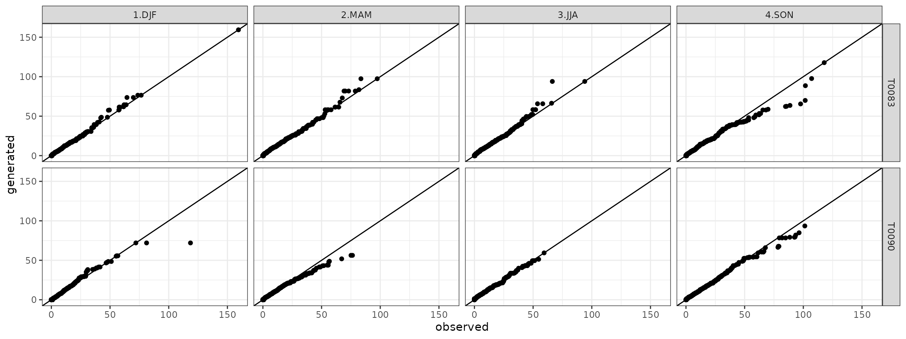
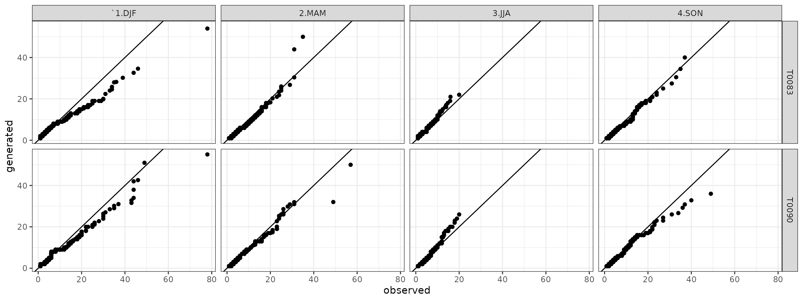

Stochastic Generation of Daily Precipitation Time Series
Emanuele Cordano
2024-08-12
Source:vignettes/precipitation_stochastic_generation_v8.Rmd
precipitation_stochastic_generation_v8.RmdOverview
Stochastic generators of weather variables, called “Weather
Generators” (WGs) have been widely developed in the recent decades for
hydrological and agricultural applications (e.g. Richardson (1981) Racsko,
Szeidl, and Semenov (1991), Mikhail A.
Semenov and Barrow (1997), Parlange and
Katz (01 May. 2000),Liu et al.
(2009),J. Chen, Brissette, and Leconte
(2012),Jie Chen and Brissette
(2014),Cordano and Eccel (2016),
Verdin et al. (2018) ). These instruments
have been used in several applications related to plant phenology and
agriculture (e.g. Delerce et al. (2016),
Benmoussa et al. (2018), Alikadic et al. (2019)) and hydroclimatic case
studies (e.g. Fu, Chiew, and Shi (2018),
Ahn and Steinschneider (2018)). Former
applications of WGs are the reproductions of daily weather time series
from downscaled monthly climate predictions (Mearns et al. (2001),Wilks and Wilby (1999),Qian, Corte-Real, and Xu (2002),M. A. Semenov and Stratonovitch (2010)). If
high-resolution application models are to be used with downscaled
series, a meteorological consistence of generated series is required,
suggesting the use of a multi-site weather generator. Algorithms to
represent historical spatial dependences of weather variables have been
developed by Wilks (1998),Khalili, Brissette, and Leconte (2009),Serinaldi (2009) and Bárdossy and Pegram (2009). Wilks (1998) simulated rainfall occurrences
through a generation of combinations of Gaussian random variables and
established a relationship for each pair of rain gauges between Gaussian
variables correlation and binary precipitation occurrence values. In
this way, weather generators can reproduce at least partially spatial
correlations. This approach is widely cited in literature (e.g. Mehrotra, Srikanthan, and Sharma (2006),Brissette, Khalili, and Leconte (2007),Serinaldi (2009),Thompson, Thomson, and Zheng (2007),Mhanna and Bauwens (2011)).
In principle, RMAWGEN (RMultisite Auto-regressive
Weather Generator) was developed to cope with the demand for
high-resolution climatic scenarios but also to create a flexible tool
for engineers, climatologists, and environmental sciences modellers.
Recently, statistical methods useful for weather generation, originally
developed in environmetrics and econometrics, were made available in the
R platform. RMAWGEN uses R’s existing tools for vector
auto-regressive models (Pfaff (2008)),
employed for generation of weather variables (Adenomon and Oyejola (2013),Luguterah, Nasiru, and Anzagra (2013),Shahin, Ali, and Ali (2014)), and to let the end
users work with other R spatio-temporal tools for data analysis and
visualization (Bivand, Pebesma, and Gomez-Rubio
(2008),Loecher and Berlin School of
Economics and Law (2012),Kahle and Wickham
(2013),Cheng, Karambelkar, and Xie
(2018)). RMAWGEN (Cordano
and Eccel (2019)) carries out generations of weather series
through Vector Auto-regressive Models; the latter work generally well
for time-continuous variables, but present some critical issues for
intermittent weather variables like precipitation. Meanwhile,
RGENERATE (Cordano
(2015)) has been created to create several the stochasic
generation algorithms by using a unique S3/S4 method called starting
from the ones in RMAWGEN to other models, where
stochastic weather generations follow different algorithms.
RGENERATEPREC contains an extension the
generate methods in order to make a stochstic generation of
precipitations, using logistic regression instead of linear regression
used for the Gaussianized variables in RMAWGEN.
Introduction
The scope of this vignette is a generation of stochastic times series of daily precipitatoion with the same stastistical properties (e.g. probability distrubtions of precipitation occurrence, precipitation account, dry spell, wet spell per each month of the year) of the observed one(s). The weather generator can work with one or more time series generating scenarios for several sites and mantainig their spatial cross-correlation. This vignette shows an example of a stochastic generation based on a single observed time series in a rainfall gauging station and a generation of several time series based on a network of rainfall gauging stations. Therefore, an examples of stochastic generator of daily time series based on climate possible projections when precipitation amount probability distribution is assigned. The examples make used of the example dataset already presented in RMAWGEN package, dataset already imported by RGENERATEPREC. Therefore, package RGENARATEPREC and other necessary packages are loaded as follows:
Trentino Example Dataset
The trentino dataset, provided by RMAWGEN package, is a collection of daily values of precipitation, minimum temperature, maximum temperature in a 50-year long temporal window from 1958-01-01 to 2007-12-31 .
data(trentino)The stations are spread in a territory covering Trentino and its neighbourhood (Cheng, Karambelkar, and Xie (2018)).
library(sf)
library(mapview)
trentino_stations <- data.frame(x=STATION_LATLON[,1],y=STATION_LATLON[,2],name=STATION_NAMES)
######
trentino_stations$geometry <- trentino_stations[,c("x","y")] %>% t() %>% as.data.frame() %>% as.list() %>% lapply(st_point) %>% st_sfc()
trentino_stations <- st_sf(trentino_stations,geometry=trentino_stations$geometry,crs=4326)
mapview(trentino_stations,col.regions="blue")Weather data are contained in three data frames (one for each variable) where the first 3 columns refer to year, month and day whereas the other columns refer to each gauging station.
A reference period between 1961 and 1990 is taken:
year_min <- 1961
year_max <- 1990
origin <- paste(year_min,1,1,sep="-")
period <- PRECIPITATION$year>=year_min & PRECIPITATION$year<=year_max
period_temp <- TEMPERATURE_MAX$year>=year_min & TEMPERATURE_MAX$year<=year_maxThe time series in the reference period are saved as new variables: prec_mes,Tx_mes and Tn_mes:
prec_mes <- PRECIPITATION[period,]
Tx_mes <- TEMPERATURE_MAX[period_temp,]
Tn_mes <- TEMPERATURE_MIN[period_temp,]The analysis has been focused only on the stations whose time series is completed within the reference period.
accepted <- array(TRUE,length(names(prec_mes)))
names(accepted) <- names(prec_mes)
for (it in names(prec_mes)) {
acc <- TRUE
acc <- (length(which(!is.na(Tx_mes[,it])))==length(Tx_mes[,it]))
acc <- (length(which(!is.na(Tn_mes[,it])))==length(Tn_mes[,it])) & acc
accepted[it] <- (length(which(!is.na(prec_mes[,it])))==length(prec_mes[,it])) & acc
}The station involved in the computation are then the following:
names(accepted)
#> [1] "month" "day" "year" "T0001" "T0010" "T0014" "T0018" "T0021" "T0024"
#> [10] "T0032" "T0064" "T0074" "T0082" "T0083" "T0090" "T0092" "T0094" "T0099"
#> [19] "T0102" "T0103" "T0110" "T0129" "T0139" "T0147" "T0149" "T0150" "T0152"
#> [28] "T0154" "T0157" "T0160" "T0163" "T0166" "T0168" "T0169" "T0172" "T0175"
#> [37] "T0179" "T0189" "T0193" "T0204" "T0210" "T0211" "T0236" "T0327" "T0355"
#> [46] "T0360" "T0367" "T0370" "T0373" "B2440" "B6130" "B7810" "B8570" "B9100"
#> [55] "LFORN" "LAVIO" "LVACC" "VBARD" "VCAST" "VDOLC" "SMICH" "POLSA"Three data frames for observed values of daily precipitation:
prec_mes <- prec_mes[,accepted]
head(prec_mes)
#> month day year T0001 T0014 T0064 T0083 T0090 T0129 T0139 T0211 T0367
#> 1097 1 1 1961 0.0 0.00 0.0 0.000 0.00 0.000 0.00 1.3 0.0
#> 1098 1 2 1961 10.8 7.38 14.0 6.765 0.00 12.900 9.43 15.5 10.4
#> 1099 1 3 1961 0.0 0.00 0.0 0.000 0.00 0.172 0.00 0.0 0.0
#> 1100 1 4 1961 22.2 25.56 32.5 61.500 12.96 33.368 17.25 38.3 8.0
#> 1101 1 5 1961 0.0 0.00 0.0 0.000 0.00 0.000 0.00 0.0 0.0
#> 1102 1 6 1961 0.0 0.00 0.0 0.000 0.00 0.000 0.00 0.0 1.0;maximum temparature:
Tx_mes <- Tx_mes[,accepted]
head(Tx_mes)
#> month day year T0001 T0014 T0064 T0083 T0090 T0129 T0139 T0211 T0367
#> 1097 1 1 1961 -0.08 -0.83 -2 1.36 1.87 1.19 -1 -0.11 -0.16
#> 1098 1 2 1961 0.92 -1.13 -3 0.36 1.44 2.79 -2 2.90 4.84
#> 1099 1 3 1961 0.92 -1.83 2 -0.64 1.87 0.79 -4 1.90 -2.16
#> 1100 1 4 1961 5.92 0.57 1 1.36 1.44 2.79 0 2.90 7.84
#> 1101 1 5 1961 3.92 0.77 5 6.36 3.87 4.79 5 2.90 2.84
#> 1102 1 6 1961 -0.08 -1.43 3 4.36 2.87 0.79 3 -2.10 -2.16and minimum temparature:
Tn_mes <- Tn_mes[,accepted]
head(Tn_mes)
#> month day year T0001 T0014 T0064 T0083 T0090 T0129 T0139 T0211 T0367
#> 1097 1 1 1961 -6 -5.39 -6.44 -6.23 -2.56 0.17 -6 -3.55 -6.24
#> 1098 1 2 1961 -2 -4.79 -7.44 -3.23 0.87 -0.83 -5 -2.55 -9.24
#> 1099 1 3 1961 -9 -5.39 -6.44 -6.23 -1.56 -2.83 -5 -3.55 -5.24
#> 1100 1 4 1961 0 -4.89 -4.44 -4.23 0.87 0.17 -4 0.45 -9.24
#> 1101 1 5 1961 -5 -6.39 -8.44 -8.23 -5.56 -1.83 -6 -3.55 -12.24
#> 1102 1 6 1961 -8 -7.59 -11.44 -9.23 -7.56 -4.83 -8 -5.55 -8.24are created. Rainy or wet day is defined as a day where precipition occurs and its precipitation value is equal or greater than 1 mm. If precipation is lower or zero, the day is defined as dry. Therefore, a data frame of logical values containing precipitation occurrence is created:
valmin <- 1.0
prec_occurence_mes <- prec_mes
station <- names(prec_mes)[!(names(prec_mes) %in% c("day","month","year"))]
prec_occurence_mes[,station] <- prec_mes[,station]>=valmin
head(prec_occurence_mes)
#> month day year T0001 T0014 T0064 T0083 T0090 T0129 T0139 T0211 T0367
#> 1097 1 1 1961 FALSE FALSE FALSE FALSE FALSE FALSE FALSE TRUE FALSE
#> 1098 1 2 1961 TRUE TRUE TRUE TRUE FALSE TRUE TRUE TRUE TRUE
#> 1099 1 3 1961 FALSE FALSE FALSE FALSE FALSE FALSE FALSE FALSE FALSE
#> 1100 1 4 1961 TRUE TRUE TRUE TRUE TRUE TRUE TRUE TRUE TRUE
#> 1101 1 5 1961 FALSE FALSE FALSE FALSE FALSE FALSE FALSE FALSE FALSE
#> 1102 1 6 1961 FALSE FALSE FALSE FALSE FALSE FALSE FALSE FALSE TRUEGeneration of Precipitation in One Station
Occurrence
A precipitation occurrence generator model is created in order to reproduce a time series consistent with observed time series in:
it1 <- "T0083" #station[2]
it1
#> [1] "T0083"Let assume that precipitation occurrence also depend on the diurnal temperature variation which is taken into account as an exogenous variable. Therefore, a model based on a logistic regression with a generalized linear model is created and saved as model1 variable;
exogen <- Tx_mes[,it1]-Tn_mes[,it1]
months <- factor(prec_mes$month)
model1 <- PrecipitationOccurrenceModel(x=prec_mes[,it1],exogen=exogen,monthly.factor=months)The model is an S3 opject:
class(model1)
#> [1] "PrecipitationOccurrenceModel"constituting of a list of 5 elements:
The first element is a data frame containing the predictor values: the exogenous variable, the month of the year and the precipiation occurrence at the previous days:
str(model1$predictor)
#> 'data.frame': 10957 obs. of 3 variables:
#> $ exogen: num 7.59 3.59 5.59 5.59 14.59 ...
#> $ month : Factor w/ 12 levels "1","2","3","4",..: 1 1 1 1 1 1 1 1 1 1 ...
#> $ x_l01 : logi NA FALSE TRUE FALSE TRUE FALSE ...Then, a genaralized linear model :
summary(model1$glm)
#>
#> Call:
#> glm(formula = df, family = "binomial")
#>
#> Coefficients:
#> Estimate Std. Error z value Pr(>|z|)
#> (Intercept) 1.440154 0.122650 11.742 < 2e-16 ***
#> exogen -0.330272 0.008389 -39.368 < 2e-16 ***
#> month2 0.164982 0.141512 1.166 0.2437
#> month3 0.904704 0.136761 6.615 3.71e-11 ***
#> month4 1.222853 0.134677 9.080 < 2e-16 ***
#> month5 1.736783 0.130607 13.298 < 2e-16 ***
#> month6 2.034278 0.130296 15.613 < 2e-16 ***
#> month7 1.883444 0.130523 14.430 < 2e-16 ***
#> month8 1.819358 0.130535 13.938 < 2e-16 ***
#> month9 1.250177 0.136727 9.144 < 2e-16 ***
#> month10 0.810081 0.138679 5.841 5.18e-09 ***
#> month11 0.272739 0.134311 2.031 0.0423 *
#> month12 -0.291167 0.139652 -2.085 0.0371 *
#> x_l01TRUE 0.791204 0.053903 14.678 < 2e-16 ***
#> ---
#> Signif. codes: 0 '***' 0.001 '**' 0.01 '*' 0.05 '.' 0.1 ' ' 1
#>
#> (Dispersion parameter for binomial family taken to be 1)
#>
#> Null deviance: 12790.1 on 10955 degrees of freedom
#> Residual deviance: 9572.5 on 10942 degrees of freedom
#> AIC: 9600.5
#>
#> Number of Fisher Scoring iterations: 5The third element is the order of the autoregression, i.e. the number of previous days whose data are used as predictors in the genaralized linear model:
model1$p
#> [1] 1The minimum daily precipitation value above which the day ids considered as wet, e.g. 1 mm:
model1$valmin
#> [1] 0.5Then, a field name is considered:
model$id.nameOnce built the model, the time series of daily probabilities of precipitation occurrence can be predicted:
probs <- predict(model1$glm,type="response")where probs is the predicted probabability of precipitation occurrence releted to the time series of the observed values: each element of probs corresponds to the day of the corresponding row of the input dataset prec_mes[,it]. In case that the model is applied to a daily time series of precipitation occurrence and exogenous variale, i.e. predictors, they must be included as a new data frame equal to newdata argument:
row_test <- 2000:2007
newdata <- model1$predictor[row_test,]For instance, subsetting the observiations, a new dataset is created:
head(newdata)
#> exogen month x_l01
#> 2000 12.76 6 FALSE
#> 2001 13.76 6 FALSE
#> 2002 15.76 6 FALSE
#> 2003 16.76 6 TRUE
#> 2004 12.76 6 FALSE
#> 2005 14.76 6 FALSE
newdata$probs2 <- predict(model1,newdata=newdata)
head(newdata)
#> exogen month x_l01 probs2
#> 2000 12.76 6 FALSE 0.3230402
#> 2001 13.76 6 FALSE 0.2553828
#> 2002 15.76 6 FALSE 0.1505044
#> 2003 16.76 6 TRUE 0.2193055
#> 2004 12.76 6 FALSE 0.3230402
#> 2005 14.76 6 FALSE 0.1977561Once obtained the model, a random stochastic time series of daily precipitation occurrence is generated through generate method. First of all, the following predictors are needed:
- a time series of exogenous variables is needeed.
- a time series of month factor indicating the corresponding month of the year for each day of the new stochastically generated time series;
These two time series must be of the same length which corresponds to the length of the time series that is about to generate. For instance, if the time series is a replication of the observed one, it is:
Amount
Once generated precipitation occurrence values, precipitation amount values are genereted through a stochastic generator model. The precipitation amount stochastic generator is built as follows:
model1_amount <- PrecipitationAmountModel(prec_mes,station=it1,origin=origin)where model_amount is an S3 object:
class(model1_amount)
#> [1] "PrecipitationAmountModel"containing the following items:
names(model1_amount)
#> [1] "T0083" "station" "sample" "x" "origin" "valmin"The first item is a generalized linear model, in which Gaussianized value of precipitation depends on month:
summary(model1_amount[[it1]])
#>
#> Call:
#> lm(formula = df)
#>
#> Residuals:
#> Min 1Q Median 3Q Max
#> -2.74134 -0.68036 -0.00999 0.66302 3.07671
#>
#> Coefficients:
#> Estimate Std. Error t value Pr(>|t|)
#> (Intercept) -0.01865 0.08008 -0.233 0.816
#> month2 0.08147 0.11382 0.716 0.474
#> month3 0.03716 0.10579 0.351 0.725
#> month4 0.02625 0.10285 0.255 0.799
#> month5 0.04111 0.09830 0.418 0.676
#> month6 0.04275 0.09792 0.437 0.662
#> month7 0.01087 0.09960 0.109 0.913
#> month8 0.04105 0.10012 0.410 0.682
#> month9 0.03853 0.10659 0.362 0.718
#> month10 0.04228 0.10849 0.390 0.697
#> month11 0.04162 0.10483 0.397 0.691
#> month12 0.05511 0.11699 0.471 0.638
#>
#> Residual standard error: 0.9873 on 2608 degrees of freedom
#> Multiple R-squared: 0.0003119, Adjusted R-squared: -0.003905
#> F-statistic: 0.07398 on 11 and 2608 DF, p-value: 1Other items are the following variables: names of the considered station (e.g. only “T0083”}), the origin date of the time series used to build the model and the minimum value of precipipition to consider as precipitation occurrence, in this case 1 mm.
model1_amount$station
#> [1] "T0083"
model1_amount$sample
#> [1] "monthly"
model1_amount$origin
#> [1] "1961-1-1"
model1_amount$valmin
#> [1] 1Finally, the x item is the data frame containing observed time series of precipitation:
str(model1_amount$x)
#> 'data.frame': 10957 obs. of 1 variable:
#> $ T0083: num 0 6.76 0 61.5 0 ...Finally, a time series, here called prec_gen1 , is generate by applying generate method to the model of precipitation account:
Comparison
The stochastic coherence between observed and generated time series is verified through the Quantile-Quantile plot:
library(ggplot2)
library(lubridate)
library(reshape2)
df <- data.frame(obs=prec_mes[,it1],gen=prec_gen1[,it1])
df$date <- as.Date(origin)+days(1:nrow(df))-1
df$month <- factor(month(df$date))
df$season <- "none"
df$season[df$month %in% c(12,2,1)] <- "`1.DJF"
df$season[df$month %in% c(3,4,5)] <- "2.MAM"
df$season[df$month %in% c(6,7,8)] <- "3.JJA"
df$season[df$month %in% c(9,10,11)] <- "4.SON"
qqplot_ <- function(df) {
df <- as.list(df)
o <- qqplot(df[[1]],df[[2]],plot.it=FALSE)
names(o) <- names(df)[1:2]
o <- as.data.frame(o)
return(o)
}
qqdf <- split(df,f=df$season) %>% lapply(FUN=qqplot_) %>% melt(id=names(df)[1:2])
names(qqdf)[names(qqdf)=="L1"] <- "season"
g <- ggplot(data=qqdf)+geom_point(aes(x=obs,y=gen))+theme_bw()+geom_abline()+facet_grid(. ~ season)+xlab("observed")+ylab("generated")
show(g)A comparison of the dry/wet spells, considered as periods of consecutive dry/rainy days, between observed and generated time series are plotted below respectively. The following lines of codes makes use of dw.spell function that calculates the length expressed in days for the dry or wet spells:
dw <- list()
dw$obs <- dw.spell(prec_mes[,it1],origin=origin)[[1]]
dw$obs$variable <- "obs"
dw$gen <- dw.spell(prec_gen1[,it1],origin=origin)[[1]]
dw$gen$variable <- "gen"
dw <- do.call(what=rbind,args=dw)
dw$season <- "none"
dw$season[dw$month %in% c(12,2,1)] <- "`1.DJF"
dw$season[dw$month %in% c(3,4,5)] <- "2.MAM"
dw$season[dw$month %in% c(6,7,8)] <- "3.JJA"
dw$season[dw$month %in% c(9,10,11)] <- "4.SON"
qqdw <- split(dw,f=paste(dw$spell_state,dw$season,sep="_")) %>% lapply(FUN=function(x){list(obs=x$spell_length[x$variable=="obs"],gen=x$spell_length[x$variable=="gen"])}) %>% lapply(FUN=qqplot_) %>% melt(id=c("obs","gen"))
qqdw_add <- str_split(qqdw$L1,pattern="_") %>% do.call(what=rbind) %>% as.data.frame()
names(qqdw_add) <- c("state","season")
qqdw <- cbind(qqdw,qqdw_add)Therefore, the quantile-quantile plots for the dry spells are:
qqdry <- qqdw[qqdw$state=="dry",]
## ggplot plot
ggdry <- ggplot(data=qqdry)+geom_point(aes(x=obs,y=gen))+theme_bw()+geom_abline()+facet_grid(. ~ season)+xlab("observed")+ylab("generated")
show(ggdry) Analogously for the wet spells it is:
Analogously for the wet spells it is:
qqwet <- qqdw[qqdw$state=="wet",]
## ggplot plot
ggwet <- ggplot(data=qqwet)+geom_point(aes(x=obs,y=gen))+theme_bw()+geom_abline()+facet_grid(. ~ season)+xlab("observed")+ylab("generated")
show(ggwet)It is a comparison of sample probability distributtions of daily precipitation, dry and wet spells between the one obtained by the observed time series and the generated time series.
Generation of Precipitation in Several Stations
Occurrence
Analogously as the one-site case, a precipitation occurrence generator is created from precipitation time series taken in several correlated sites belonging to a limited geographical area. For instance, a subset of Trentino dataset stations is taken into account:
they <- c("T0083","T0090") ##station
exogen <- Tx_mes[,they]-Tn_mes[,they]
months <- factor(prec_mes$month)
model <- PrecipitationOccurrenceMultiSiteModel(x=prec_mes[,they],exogen=exogen,origin=origin)where model cotains the following elements:
names(model)
#> [1] "T0083" "T0090" "ccgamma" "K" "type" "station" "p"in which the fist (all but the last 6) elements are single-site precipitation occurrene models, one for each gauge precipitation station:
class(model[[1]])
#> [1] "PrecipitationOccurrenceModel"and the remaining ones are:
class(model$ccgamma)
#> [1] "CCGammaObjectListPerEachMonth"in which ccgamma is a matrix of corresponding Gaussian correlation of precipitation occurrences calculated with the algorithm introduced by Wilks (1998); this method makes use of a bijective relationships between correlation of binomial processes and Gaussian processes and is used alternatively to a complete logistic regression among stations that would have been computationally heavier;
class(model$K)
#> [1] "integer"in which K corresponds to the dimensionality (i.e. the number of the gauging stations);
class(model$type)
#> [1] "character"in which type is the type of the model: in this case, it is based on Wilks’ approach to handle the plurality of the gauging stations;
class(model$station)
#> [1] "character"in which station is a vector of the names of the gauging stations;
class(model$p)
#> [1] "numeric"in which p is the lag order of autoregression for the generalized linear model. Therefore, the stochastic generation is made by applying generate method to the model:
prec_gen_occ <- generate(model,exogen=exogen,monthly.factor=months,n=length(months))
#> Processing T0083
#> Processing T0090
str(prec_gen_occ)
#> 'data.frame': 10957 obs. of 2 variables:
#> $ T0083: logi [1:10957(1d)] FALSE TRUE TRUE TRUE FALSE FALSE ...
#> $ T0090: logi [1:10957(1d)] FALSE TRUE TRUE TRUE FALSE FALSE ...Amount
The precipitation amount stochastic generator is then built as follows:
model_amount <- PrecipitationAmountModel(prec_mes,station=they,origin=origin)
names(model_amount)
#> [1] "T0083" "T0090" "station" "sample" "x" "origin" "valmin"where model_amount is an S3 object:
class(model_amount)
#> [1] "PrecipitationAmountModel"containing the following items:
names(model_amount)
#> [1] "T0083" "T0090" "station" "sample" "x" "origin" "valmin"The first elements are generalized linear models, in which Gaussianized values of precipitation depend on month of the year:
for (its in model_amount$station) summary(model_amount[[its]])In the following, the model contains also a vector with the name of the gauging stations and other options like for the case with only one gauging station:
model_amount$station
#> [1] "T0083" "T0090"
model_amount$sample
#> [1] "monthly"
model_amount$origin
#> [1] "1961-1-1"
model_amount$valmin
#> [1] 1Finally, a data frame with the generated times series for each gauging station site is obtained as follows:
Comparison
Quantile-quantile plots for precipitation time series both station are created as follows (if not specified, measurment units are millimiters):
library(ggplot2)
library(lubridate)
library(reshape2)
str(prec_mes)
#> 'data.frame': 10957 obs. of 12 variables:
#> $ month: int 1 1 1 1 1 1 1 1 1 1 ...
#> $ day : num [1:10957(1d)] 1 2 3 4 5 6 7 8 9 10 ...
#> $ year : int 1961 1961 1961 1961 1961 1961 1961 1961 1961 1961 ...
#> $ T0001: num 0 10.8 0 22.2 0 0 2.8 0 0 0 ...
#> $ T0014: num 0 7.38 0 25.56 0 ...
#> $ T0064: num 0 14 0 32.5 0 0 0 0 0 0 ...
#> $ T0083: num 0 6.76 0 61.5 0 ...
#> $ T0090: num 0 0 0 13 0 ...
#> $ T0129: num 0 12.9 0.172 33.368 0 ...
#> $ T0139: num 0 9.43 0 17.25 0 ...
#> $ T0211: num 1.3 15.5 0 38.3 0 0 7.6 0 0 0 ...
#> $ T0367: num 0 10.4 0 8 0 1 0 0 0 4.5 ...
str(prec_gen)
#> 'data.frame': 10957 obs. of 2 variables:
#> $ T0083: num 0 3.21 8.52 21.4 0 ...
#> $ T0090: num 0 13.49 7.68 7.68 0 ...
df <- list(obs=prec_mes[names(prec_gen)],gen=prec_gen)
for ( i in 1:length(df)) {
df[[i]]$date <- as.Date(origin)+days(1:nrow(df[[i]]))-1
}
df <- melt(df,id="date")
names(df)[names(df)=="variable"] <- "station"
names(df)[names(df)=="L1"] <- "variable"
df$month <- factor(month(df$date))
df$season <- "none"
df$season[df$month %in% c(12,2,1)] <- "1.DJF"
df$season[df$month %in% c(3,4,5)] <- "2.MAM"
df$season[df$month %in% c(6,7,8)] <- "3.JJA"
df$season[df$month %in% c(9,10,11)] <- "4.SON"
qqdf <- split(df,f=paste(df$station,df$season,sep="_")) %>%
lapply(FUN=function(x){list(obs=x$value[x$variable=="obs"],gen=x$value[x$variable=="gen"])}) %>% lapply(FUN=qqplot_) %>% melt(id=c("obs","gen"))
qqdf_add <- str_split(qqdf$L1,pattern="_") %>% do.call(what=rbind) %>% as.data.frame()
names(qqdf_add) <- c("station","season")
qqdf <- cbind(qqdf,qqdf_add)
## ggplot plot
ggdf <- ggplot(data=qqdf)+geom_point(aes(x=obs,y=gen))+theme_bw()+geom_abline()+facet_grid(station ~ season)+xlab("observed")+ylab("generated")
show(ggdry)
show(ggdf)
As concerns the representation and analysis of dry/wet spells, the respective quantile-quantile plots has been produces as follows:
dw <- list()
dw$obs <- dw.spell(prec_mes[,they],origin=origin)
nn <- names(dw$obs[[1]])
dw$obs <- melt(dw$obs,id=nn)
dw$obs$variable <- "obs"
dw$gen <- dw.spell(prec_gen[,they],origin=origin) %>% melt(id=nn)
dw$gen$variable <- "gen"
dw <- do.call(what=rbind,args=dw)
names(dw)[names(dw)=="L1"] <- "station"
dw$season <- "none"
dw$season[dw$month %in% c(12,2,1)] <- "`1.DJF"
dw$season[dw$month %in% c(3,4,5)] <- "2.MAM"
dw$season[dw$month %in% c(6,7,8)] <- "3.JJA"
dw$season[dw$month %in% c(9,10,11)] <- "4.SON"
qqdw <- split(dw,f=paste(dw$spell_state,dw$station,dw$season,sep="_")) %>% lapply(FUN=function(x){list(obs=x$spell_length[x$variable=="obs"],gen=x$spell_length[x$variable=="gen"])}) %>% lapply(FUN=qqplot_) %>% melt(id=c("obs","gen"))
qqdw_add <- str_split(qqdw$L1,pattern="_") %>% do.call(what=rbind) %>% as.data.frame()
names(qqdw_add) <- c("state","station","season")
qqdw <- cbind(qqdw,qqdw_add)Finally, the quantile-quantile plots for the dry spells are:
qqdry <- qqdw[qqdw$state=="dry",]
## ggplot plot
ggdry <- ggplot(data=qqdry)+geom_point(aes(x=obs,y=gen))+theme_bw()+geom_abline()+facet_grid(station ~ season)+xlab("observed")+ylab("generated")
show(ggdry) and the quantile-quantile plots for the wet spells are:
qqwet <- qqdw[qqdw$state=="wet",]
## ggplot plot
ggwet <- ggplot(data=qqwet)+geom_point(aes(x=obs,y=gen))+theme_bw()+geom_abline()+facet_grid(station ~ season)+xlab("observed")+ylab("generated")
show(ggwet)The comparison of sample probability distribution between observed and generated timeseries has been tested for each month of the year:
months <- unique(prec_mes$month)
ks_test <- list()
for (m in months) {
ks_test[[m]] <- ks.test(prec_mes[prec_mes$month==m,it1],prec_gen[prec_mes$month==m,it1])
}
ks_test
#> [[1]]
#>
#> Asymptotic two-sample Kolmogorov-Smirnov test
#>
#> data: prec_mes[prec_mes$month == m, it1] and prec_gen[prec_mes$month == m, it1]
#> D = 0.034409, p-value = 0.6407
#> alternative hypothesis: two-sided
#>
#>
#> [[2]]
#>
#> Asymptotic two-sample Kolmogorov-Smirnov test
#>
#> data: prec_mes[prec_mes$month == m, it1] and prec_gen[prec_mes$month == m, it1]
#> D = 0.029516, p-value = 0.8543
#> alternative hypothesis: two-sided
#>
#>
#> [[3]]
#>
#> Asymptotic two-sample Kolmogorov-Smirnov test
#>
#> data: prec_mes[prec_mes$month == m, it1] and prec_gen[prec_mes$month == m, it1]
#> D = 0.04086, p-value = 0.4193
#> alternative hypothesis: two-sided
#>
#>
#> [[4]]
#>
#> Asymptotic two-sample Kolmogorov-Smirnov test
#>
#> data: prec_mes[prec_mes$month == m, it1] and prec_gen[prec_mes$month == m, it1]
#> D = 0.037778, p-value = 0.5419
#> alternative hypothesis: two-sided
#>
#>
#> [[5]]
#>
#> Asymptotic two-sample Kolmogorov-Smirnov test
#>
#> data: prec_mes[prec_mes$month == m, it1] and prec_gen[prec_mes$month == m, it1]
#> D = 0.063441, p-value = 0.04736
#> alternative hypothesis: two-sided
#>
#>
#> [[6]]
#>
#> Asymptotic two-sample Kolmogorov-Smirnov test
#>
#> data: prec_mes[prec_mes$month == m, it1] and prec_gen[prec_mes$month == m, it1]
#> D = 0.057778, p-value = 0.09912
#> alternative hypothesis: two-sided
#>
#>
#> [[7]]
#>
#> Asymptotic two-sample Kolmogorov-Smirnov test
#>
#> data: prec_mes[prec_mes$month == m, it1] and prec_gen[prec_mes$month == m, it1]
#> D = 0.053763, p-value = 0.136
#> alternative hypothesis: two-sided
#>
#>
#> [[8]]
#>
#> Asymptotic two-sample Kolmogorov-Smirnov test
#>
#> data: prec_mes[prec_mes$month == m, it1] and prec_gen[prec_mes$month == m, it1]
#> D = 0.044086, p-value = 0.3267
#> alternative hypothesis: two-sided
#>
#>
#> [[9]]
#>
#> Asymptotic two-sample Kolmogorov-Smirnov test
#>
#> data: prec_mes[prec_mes$month == m, it1] and prec_gen[prec_mes$month == m, it1]
#> D = 0.052222, p-value = 0.1717
#> alternative hypothesis: two-sided
#>
#>
#> [[10]]
#>
#> Asymptotic two-sample Kolmogorov-Smirnov test
#>
#> data: prec_mes[prec_mes$month == m, it1] and prec_gen[prec_mes$month == m, it1]
#> D = 0.070968, p-value = 0.01849
#> alternative hypothesis: two-sided
#>
#>
#> [[11]]
#>
#> Asymptotic two-sample Kolmogorov-Smirnov test
#>
#> data: prec_mes[prec_mes$month == m, it1] and prec_gen[prec_mes$month == m, it1]
#> D = 0.042222, p-value = 0.3987
#> alternative hypothesis: two-sided
#>
#>
#> [[12]]
#>
#> Asymptotic two-sample Kolmogorov-Smirnov test
#>
#> data: prec_mes[prec_mes$month == m, it1] and prec_gen[prec_mes$month == m, it1]
#> D = 0.03871, p-value = 0.4888
#> alternative hypothesis: two-sidedIn conclusion, the spatial statistical correlation between observed and generated time series can be checked making use of CCGamma function:
str(prec_mes[,they])
#> 'data.frame': 10957 obs. of 2 variables:
#> $ T0083: num 0 6.76 0 61.5 0 ...
#> $ T0090: num 0 0 0 13 0 ...
str(prec_gen[,they])
#> 'data.frame': 10957 obs. of 2 variables:
#> $ T0083: num 0 3.21 8.52 21.4 0 ...
#> $ T0090: num 0 13.49 7.68 7.68 0 ...
cc_mes <- CCGamma(prec_mes[,they],sample = "monthly",origin = origin)
cc_gen <- CCGamma(prec_gen[,they],sample = "monthly",origin = origin)where cc_mes and cc_gen are lists containing joint probability and correlation matrices among precipitation occurrences for each couple of sites. In case of sample=monthly setting, these matrices are replicated for each of the 12 months of the year. The structures of cc_mes and cc_gen can be displayed as follows:
Then, the estimated correlation matrix of no-precipitation occurrence per each month of the year and for observed time series is:
#> $`1`
#> [,1] [,2]
#> [1,] 1.0000000 0.7172415
#> [2,] 0.7172415 1.0000000
#>
#> $`2`
#> [,1] [,2]
#> [1,] 1.0000000 0.7185805
#> [2,] 0.7185805 1.0000000
#>
#> $`3`
#> [,1] [,2]
#> [1,] 1.0000000 0.7603387
#> [2,] 0.7603387 1.0000000
#>
#> $`4`
#> [,1] [,2]
#> [1,] 1.0000000 0.7686571
#> [2,] 0.7686571 1.0000000
#>
#> $`5`
#> [,1] [,2]
#> [1,] 1.0000000 0.6891203
#> [2,] 0.6891203 1.0000000
#>
#> $`6`
#> [,1] [,2]
#> [1,] 1.0000000 0.6421596
#> [2,] 0.6421596 1.0000000
#>
#> $`7`
#> [,1] [,2]
#> [1,] 1.0000000 0.6617584
#> [2,] 0.6617584 1.0000000
#>
#> $`8`
#> [,1] [,2]
#> [1,] 1.0000000 0.6778738
#> [2,] 0.6778738 1.0000000
#>
#> $`9`
#> [,1] [,2]
#> [1,] 1.0000000 0.7237239
#> [2,] 0.7237239 1.0000000
#>
#> $`10`
#> [,1] [,2]
#> [1,] 1.0000000 0.8075086
#> [2,] 0.8075086 1.0000000
#>
#> $`11`
#> [,1] [,2]
#> [1,] 1.000000 0.784554
#> [2,] 0.784554 1.000000
#>
#> $`12`
#> [,1] [,2]
#> [1,] 1.0000000 0.7486674
#> [2,] 0.7486674 1.0000000#> $`1`
#> [,1] [,2]
#> [1,] 1.0000000 0.5684831
#> [2,] 0.5684831 1.0000000
#>
#> $`2`
#> [,1] [,2]
#> [1,] 1.0000000 0.6876702
#> [2,] 0.6876702 1.0000000
#>
#> $`3`
#> [,1] [,2]
#> [1,] 1.0000000 0.6979002
#> [2,] 0.6979002 1.0000000
#>
#> $`4`
#> [,1] [,2]
#> [1,] 1.0000000 0.6766009
#> [2,] 0.6766009 1.0000000
#>
#> $`5`
#> [,1] [,2]
#> [1,] 1.0000000 0.5829847
#> [2,] 0.5829847 1.0000000
#>
#> $`6`
#> [,1] [,2]
#> [1,] 1.0000000 0.5454573
#> [2,] 0.5454573 1.0000000
#>
#> $`7`
#> [,1] [,2]
#> [1,] 1.0000000 0.5905328
#> [2,] 0.5905328 1.0000000
#>
#> $`8`
#> [,1] [,2]
#> [1,] 1.000000 0.576023
#> [2,] 0.576023 1.000000
#>
#> $`9`
#> [,1] [,2]
#> [1,] 1.0000000 0.6046216
#> [2,] 0.6046216 1.0000000
#>
#> $`10`
#> [,1] [,2]
#> [1,] 1.0000000 0.7097068
#> [2,] 0.7097068 1.0000000
#>
#> $`11`
#> [,1] [,2]
#> [1,] 1.0000000 0.6752921
#> [2,] 0.6752921 1.0000000
#>
#> $`12`
#> [,1] [,2]
#> [1,] 1.0000000 0.6298554
#> [2,] 0.6298554 1.0000000Modifying Precipitation Distribution (e.g. Precipitation Futture Projection)
Let assume that once tested and verified the stochastic generation model, the precipitation stochastic generator may be used to generate a time series with specific probability distribution of daily precipitation (e.g. future climate change scenarios). The observed daily precipitation sample distribution for the reference station is retrieved and plotted as follows:
df <- data.frame(obs=prec_mes[,it1],gen=prec_gen1[,it1])
df$date <- as.Date(origin)+days(1:nrow(df))-1
df$month <- factor(month(df$date))
df$season <- "none"
df$season[df$month %in% c(12,2,1)] <- "1.DJF"
df$season[df$month %in% c(3,4,5)] <- "2.MAM"
df$season[df$month %in% c(6,7,8)] <- "3.JJA"
df$season[df$month %in% c(9,10,11)] <- "4.SON"
dfp <- df[df$obs>valmin,]
color_month <- rep(c("#E6352F","#34A74B","#3D79F3" ),4)[c(12,1:11)]
gdens <- ggplot(data=dfp)+geom_density(aes(x=obs,color=month,group=month),trim=TRUE)+facet_grid(season ~ .)+theme_bw()
gdens <- gdens+scale_color_manual(values = color_month)
show(gdens)Though the method of L-moments (Hosking (2019)) , the monthly samples of daily precipitation are fitted with a LN3 (Sangal and Biswas (1970)) distribution, in most of months the null hypothesis of the Kolgormov-Smirnov test can be accepted (pvalue>0.1):
library(lmom)
prec_val_m <- dfp$obs %>% split(dfp$month)
lmoms <- prec_val_m %>% lapply(FUN=samlmu)
params <- lmoms %>% lapply(FUN=pelln3,bound=valmin)
kstest <-params %>% mapply(FUN=ks.test,x=prec_val_m,y="cdfln3",SIMPLIFY=FALSE)
#> Warning in ks.test.default(dots[[1L]][[12L]], x = dots[[2L]][[12L]], y =
#> dots[[3L]][[1L]]): ties should not be present for the one-sample
#> Kolmogorov-Smirnov test
#> Warning in ks.test.default(dots[[1L]][[12L]], x = dots[[2L]][[12L]], y =
#> dots[[3L]][[1L]]): ties should not be present for the one-sample
#> Kolmogorov-Smirnov test
#> Warning in ks.test.default(dots[[1L]][[12L]], x = dots[[2L]][[12L]], y =
#> dots[[3L]][[1L]]): ties should not be present for the one-sample
#> Kolmogorov-Smirnov test
#> Warning in ks.test.default(dots[[1L]][[12L]], x = dots[[2L]][[12L]], y =
#> dots[[3L]][[1L]]): ties should not be present for the one-sample
#> Kolmogorov-Smirnov test
#> Warning in ks.test.default(dots[[1L]][[12L]], x = dots[[2L]][[12L]], y =
#> dots[[3L]][[1L]]): ties should not be present for the one-sample
#> Kolmogorov-Smirnov test
#> Warning in ks.test.default(dots[[1L]][[12L]], x = dots[[2L]][[12L]], y =
#> dots[[3L]][[1L]]): ties should not be present for the one-sample
#> Kolmogorov-Smirnov test
#> Warning in ks.test.default(dots[[1L]][[12L]], x = dots[[2L]][[12L]], y =
#> dots[[3L]][[1L]]): ties should not be present for the one-sample
#> Kolmogorov-Smirnov test
#> Warning in ks.test.default(dots[[1L]][[12L]], x = dots[[2L]][[12L]], y =
#> dots[[3L]][[1L]]): ties should not be present for the one-sample
#> Kolmogorov-Smirnov test
#> Warning in ks.test.default(dots[[1L]][[12L]], x = dots[[2L]][[12L]], y =
#> dots[[3L]][[1L]]): ties should not be present for the one-sample
#> Kolmogorov-Smirnov test
#> Warning in ks.test.default(dots[[1L]][[12L]], x = dots[[2L]][[12L]], y =
#> dots[[3L]][[1L]]): ties should not be present for the one-sample
#> Kolmogorov-Smirnov test
#> Warning in ks.test.default(dots[[1L]][[12L]], x = dots[[2L]][[12L]], y =
#> dots[[3L]][[1L]]): ties should not be present for the one-sample
#> Kolmogorov-Smirnov test
#> Warning in ks.test.default(dots[[1L]][[12L]], x = dots[[2L]][[12L]], y =
#> dots[[3L]][[1L]]): ties should not be present for the one-sample
#> Kolmogorov-Smirnov test
kstest
#> $`1`
#>
#> Asymptotic one-sample Kolmogorov-Smirnov test
#>
#> data: dots[[2L]][[1L]]
#> D = 0.085787, p-value = 0.2132
#> alternative hypothesis: two-sided
#>
#>
#> $`2`
#>
#> Asymptotic one-sample Kolmogorov-Smirnov test
#>
#> data: dots[[2L]][[2L]]
#> D = 0.10099, p-value = 0.09575
#> alternative hypothesis: two-sided
#>
#>
#> $`3`
#>
#> Asymptotic one-sample Kolmogorov-Smirnov test
#>
#> data: dots[[2L]][[3L]]
#> D = 0.061355, p-value = 0.4262
#> alternative hypothesis: two-sided
#>
#>
#> $`4`
#>
#> Asymptotic one-sample Kolmogorov-Smirnov test
#>
#> data: dots[[2L]][[4L]]
#> D = 0.10053, p-value = 0.01801
#> alternative hypothesis: two-sided
#>
#>
#> $`5`
#>
#> Asymptotic one-sample Kolmogorov-Smirnov test
#>
#> data: dots[[2L]][[5L]]
#> D = 0.094836, p-value = 0.009066
#> alternative hypothesis: two-sided
#>
#>
#> $`6`
#>
#> Asymptotic one-sample Kolmogorov-Smirnov test
#>
#> data: dots[[2L]][[6L]]
#> D = 0.11015, p-value = 0.00125
#> alternative hypothesis: two-sided
#>
#>
#> $`7`
#>
#> Asymptotic one-sample Kolmogorov-Smirnov test
#>
#> data: dots[[2L]][[7L]]
#> D = 0.10352, p-value = 0.005513
#> alternative hypothesis: two-sided
#>
#>
#> $`8`
#>
#> Asymptotic one-sample Kolmogorov-Smirnov test
#>
#> data: dots[[2L]][[8L]]
#> D = 0.080746, p-value = 0.06071
#> alternative hypothesis: two-sided
#>
#>
#> $`9`
#>
#> Asymptotic one-sample Kolmogorov-Smirnov test
#>
#> data: dots[[2L]][[9L]]
#> D = 0.086088, p-value = 0.1095
#> alternative hypothesis: two-sided
#>
#>
#> $`10`
#>
#> Asymptotic one-sample Kolmogorov-Smirnov test
#>
#> data: dots[[2L]][[10L]]
#> D = 0.097067, p-value = 0.0648
#> alternative hypothesis: two-sided
#>
#>
#> $`11`
#>
#> Asymptotic one-sample Kolmogorov-Smirnov test
#>
#> data: dots[[2L]][[11L]]
#> D = 0.083505, p-value = 0.1054
#> alternative hypothesis: two-sided
#>
#>
#> $`12`
#>
#> Asymptotic one-sample Kolmogorov-Smirnov test
#>
#> data: dots[[2L]][[12L]]
#> D = 0.09957, p-value = 0.1459
#> alternative hypothesis: two-sidedMaking the assumption that daily precipitation amount behaves as a random variable distributed with a LN3 probability distribution, a new scernario is created with a more flatten distrution than the estimated one from observations by increasing the value of 2th L-moment. Through the computation of quantiles a relationship between observed and artificial scenerios has been assessed for each month of the year and then plotted:
modify_lmoments <- function(x){x[2] <- x[2]*1.3; return(x)}
paraml <- function(x,valmin) {
ip <- which(x>=valmin)
x <- x[ip]
out <- list()
lmomx <- samlmu(x)
out$obs <- pelln3(lmom=lmomx,bound=valmin)
lmomx_m <- modify_lmoments(lmomx)
out$mod <- pelln3(lmom=lmomx_m,bound=valmin)
return(out)
}
modify_distribution <- function(x,paraml,valmin){
out <- x
ip <- which(x>=valmin)
out[ip] <- x[ip] %>% cdfln3(para=paraml$obs) %>% qualn3(para=paraml$mod)
return(out)
}
para_monthly <- df$obs %>% split(df$month) %>% lapply(FUN=paraml,valmin=valmin)
df$obs_mod <- df$obs
for (mo in unique(df$month)) {
im <- which(df$month==mo)
df$obs_mod[im] <- modify_distribution(x=df$obs[im],paraml=para_monthly[[mo]],valmin=valmin)
}
color_month <- rep(c("#E6352F","#34A74B","#3D79F3" ),4)[c(12,1:11)]
gg <- ggplot()+geom_line(data=df,mapping=aes(x=obs,y=obs_mod,col=month))+facet_grid(. ~ season)+theme_bw()
gg <- gg+scale_color_manual(values = color_month)
show(gg)The above figure shows the relation of each month of the year between real observations (obs) and modified observations (obs_mod). The shape looks like a parabolic one with an quasi-exponential increasing for high values (above 100 mm). This means that a daily precipitation value above 100 mm may become (if variabilty increases) 1.5 or 2 times higher. Analogously, considering the scenorio gived by obs_mod time series, a precipitation amount model has been built and then used for a new stochastic generation:
prec_mod <- as.data.frame(df$obs_mod)
names(prec_mod) <- it1
model1_amount_mod <- PrecipitationAmountModel(prec_mod,station=it1,origin=origin)
prec_gen1_mod <- generate(model1_amount_mod,newdata=prec_gen1_occ)
str(prec_gen1_mod)
#> 'data.frame': 10957 obs. of 1 variable:
#> $ T0083: num 0 3.96 2.19 1.05 0 ...
df$gen_mod <- prec_gen1_mod[,it1]
qqplot__ <- function(df,i=1) {
df <- as.list(df)
o <- list()
nn <- names(df)
jv <- (1:length(df))[-i]
for (j in jv) {
ot <- qqplot(df[[i]],df[[j]],plot.it=FALSE)
ot <- as.data.frame(ot)
names(ot) <- names(df)[c(i,j)]
o[[j]] <- ot
}
ref <- o[[jv[1]]][,1]
for (j in jv[-1]) {
ref2 <- o[[j]][,1]
cond <- all(ref==ref2)
if (cond==FALSE) stop("qqplot__ error")
}
o <- do.call(args=o[jv],what=cbind)
o <- o[,nn] %>% melt(id=1)
return(o)
}
nnn <- c("obs_mod","gen_mod","obs")
qqdf <- split(df[,nnn],f=df$season) %>% lapply(FUN=qqplot__) %>% melt(id=1:3)
names(qqdf)[names(qqdf)=="L1"] <- "season"
g <- ggplot(data=qqdf)+geom_point(aes(x=obs_mod,y=value,group=variable,color=variable))+theme_bw()+geom_abline()+facet_grid(. ~ season)+xlab("modified secenario through observated values [mm]")+ylab("generated / observated [mm]")
show(g)Conclusions
An example of the usage of the precipitation stochastic generation contained in RGENERATEPREC package has been shown. Visualization through quantile-quantile plots and statistical testing (e.g. Kolgomorov-Smirnov testing), the similarity of the stastistical properties (e.g. probability distrubtions of precipitation occurrence, precipitation account, dry spell, wet spell per each month of the year) between observed and generated time series hes been checked. The weather generator can work with one or more time series generating scenarios for several sites and mantaining their also spatial cross-correlation. This vignette has shown an example applied to some stations of trentino dataset. An example on how to use the weather generator with data having different probabilistic distribution (e.g. more climate variability or adaptations to future projections) has been finally illustrated.